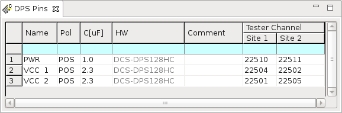

DPS Pins editor
The following table describes the parameters of DPS Pins editor.

| Name | A descriptive name for the DUT Pin. The pin name can have up to 16 alphanumeric characters. Spaces and the following characters are not allowed: # ; ( ' ' ) ? @ , Other SmarTest windows will always display the Pin name when they refer to a pin of the DUT. |
| Pol | This specifies the polarity of the DPS pin: POS. |
| C[uF] | The load capacitance. Either keep this field blank or fill it in depending on the DPS. See |
| HW | This column is not editable. After you enter the tester channel, it automatically
shows the hardware information of this channel. In the DPS Pins editor, the following items
may be displayed:
|
| Comment | Optional parameter. You can add a description of the DPS pin in this column. |
| Tester Channel | Specify a DPS channel. |
Example
Functional changes
- Introduced in SmarTest 6.5.0
- SmarTest 7.1.3: Changed the parameter Polarity to Pol.
- SmarTest 7.1.3: Changed the parameter Load Capacitor [uF]/V-Ramp [us] to C[uF].
- SmarTest 7.1.3: Changed the parameter Instrument to HW.
- SmarTest 7.3.1: DC Scale PVI8 card added.
- SmarTest 7.3.2: DC Scale UHC4T card added.
- SmarTest 7.4.0: DC Scale AVI64 card added.
- SmarTest 7.5.0: DC Scale FVI16 card added.
- SmarTest 7.10.1: DC Scale XPS256 card added.